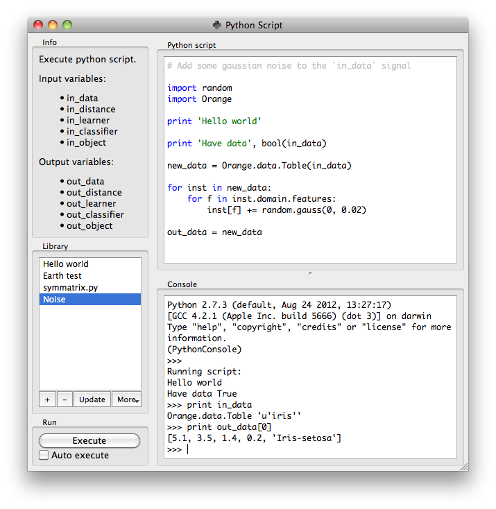

This is documentation for Orange 2.7. For the latest documentation, see Orange 3.
Python Script¶

Signals¶
Inputs:
- in_data (Orange.data.Table)
Input data set bound to in_data variable in the script’s local namespace.
- in_distance (Orange.core.SymMatrix)
Input symmetric matrix bound to in_distance variable in the script’s local namespace.
- in_learner (Orange.classification.Learner)
Input learner bound to in_learner variable in the script’s local namespace.
- in_classifier (Orange.classification.Learner)
Input classifier bound to in_classifier variable in the script’s local namespace.
- in_object (object)
Input python object bound to in_object variable in the script’s local namespace.
Outputs:
- out_data (Orange.data.Table)
Data set retrieved from out_data variable in the script’s local namespace after execution.
- out_distance (Orange.core.SymMatrix)
Symmetric matrix retrieved from out_distance variable in the script’s local namespace after execution.
- out_learner (Orange.classification.Learner)
Learner retrieved from out_learner variable in the script’s local namespace.
- out_classifier (Orange.classification.Learner), Dynamic
Classifier retrieved from out_classifier variable in the script’s local namespace after execution.
- out_object (object), Dynamic
Python object retrieved from out_object variable in the script’s local namespace after execution.
Description¶
Python Script widget can be used to run a python script on the inputs, when a suitable functionality is not implemented in an existing widgets. The scripts have in_data, in_distance, in_learner, in_classifier and in_object varaibles (from input signals) in their local namespace. If a signal is not connected or it did not yet receive any data, those variables contain None.
After the script is executed out_data, out_distance, ... variables from the script’s local namespace are extracted and used as outputs of the widget.
For instance the following script would simply pass on all signals it receives:
out_data = in_data
out_distance = in_distance
out_learner = in_learner
out_classifier = in_classifier
out_object = in_object
Note
You should not modify the input objects inplace.
The Python script editor on the left can be used to edit a script (it supports some rudimentary syntax highlighting).
Pressing the Execute in the Run box executes the script (using exec). Any script output (from print) is captured and displayed in the Console below the script.
If the Auto execute is checked the script is run any time the inputs to the widget change.
Library¶
The Library control can be used to manage multiple scripts.
Pressing + will add a new entry and open it in the Python script editor`. When the script is modified its entry in the Library will change to indicate it has unsaved changes. Pressing Update will save the script (keyboard shortcut ctrl + s). A script can be removed by selecting it and pressing the - button.